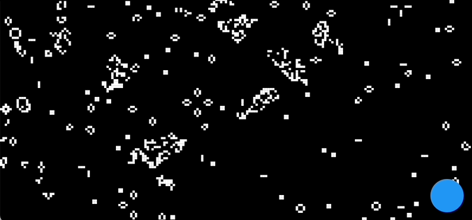

As a software engineer, I frequently enjoy experimenting with new technologies. One such exploration led me to Flutter, a UI toolkit from Google that promises fast, beautiful, and natively compiled applications. Intrigued by the potential, I initiated a project, christened 'Flikker', with a specific goal: to test the speed at which Flutter can alter pixel states.
Flikker started as a simple concept – the screen was divided into nxm squares, each acting as a pixel that could be turned on (white) or off (black). The initial implementation was a sort of 'digital light show', with the app randomly flickering the squares between the two states.
The application was an interesting exercise, but it was a casual suggestion from a friend that transformed Flikker into something far more engaging. They proposed adapting the app to serve as a simulator for Conway's Game of Life, a famous cellular automaton devised by British mathematician John Horton Conway.
The Game of Life, despite its simplicity, is a powerful demonstration of how complex patterns can emerge from simple rules. Each cell (or in this case, square) in the grid is either 'alive' or 'dead' and its future state is determined by the states of its eight neighbors according to a few basic rules:
- Any live cell with two or three live neighbors survives.
- Any dead cell with exactly three live neighbors becomes a live cell.
- All other live cells die in the next generation. Similarly, all other dead cells stay dead.
Implementing the Game of Life within Flikker transformed it into a captivating spectacle of emergent complexity.
